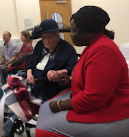
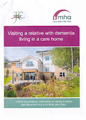

{kind=link}
When Francis and I got married last year we were careful to
make no promises, exchange no rings. It shouldn’t have made any difference,
except legally. Yet it did. We fell in love 27 years ago; have been together
and happy ever since. We have children – two as a couple and three from my
previous (failed) marriage. Our wedding was adorned by my grandchildren, our children, brothers & their families – and also by Francis’s mother, who was living with Parkinson’s dementia and has since died. (I am so glad that this was still in the period when families were welcome to keep a proper vigil with the dying person, not, as is sometimes proposed, pop in fo 15 minutes to 'say goodbye'. Our collective care of Patricia in hospital gave her an easier death, and also supported the nurses. But that's not my subject here.)
Why didn’t we marry before? For a long while it had felt
important to me that if either of us wished to leave the relationship we should
be free to do so – though I knew I never would (and guessed he wouldn’t either).
Now the ‘Till Death’ pledge has removed that option. We're in this for ever. It doesn’t matter that we
didn’t spell it out, that’s what getting married meant. For me the status change has made the most
profound, unexpected difference as it appears to have removed a last little bit of
holding back that I didn’t even know was there. This is for the rest of our
lives. It feels wonderful.
 |
| Patricia Wheen & Anna Ndbele |
{kind=link}
Pre-wedding, when I was trying to justify my volte-face to my nearest and dearest, I told
them that I was 65, an OAP and I didn’t want to be explaining Francis's and my
relationship in the dementia ward.
Unfortunately it seems that approach may not be going to
work. Of the many things that have shocked me since March 23rd lockdown, it is the complete official silence on the enormity of ‘banning’ husbands
and wives from seeing each other if one of them is in hospital, mental hospital
or lives in a care home. It’s as if the state, which usually tends to bang on
about the importance of the marriage bond, hasn’t actually noticed what it’s
done: ‘Whom God has joined together, let no man put asunder!’ Isn’t that how it
goes?
There is no sub-clause in the marriage contract to state
that if one of you is at a different address (such as a care home or hospital) because
of illness, that your commitment to one another is void. It’s only Death that
ends it.
So many people have promised – whether explicitly or in
their hearts – ‘to love, honour and cherish one another in sickness and in
health’. Now, in lockdown, they are not
‘allowed’. A few spouses were savvy enough to move in quickly if the other
was in residential care: a few residential care providers were wise enough to
welcome them. Some spouses and partners tried to get the other one ‘out’ for the
duration. But I’ve not heard they had any success. Usually lawyers were briefed and learned judges opined (from the depths of their ignorance) that the couple couldn’t cope. Even when adult children
were offering hands-on support, it was rare the family were deemed capable. No
matter that the UN Human Rights commission and the World Health Organisation
published recommendations in March for immediate de-institutionalisation in the
event of a pandemic.
This clanging down of the portcullis has made fools of care
home supporters (like me) who have been insisting that moving into residential
care when needs from illness (usually dementia) grow too great to be met at
home, should be no more than a change of address. It’s not like the c19th, I
used to say, when men and women who were forced into the workhouse, knew they
were saying their essential goodbye and would only see one another again ‘by application to the
master’ (Ronald Blythe The View in Winter). These days I wrote confidently, c21st care home
staff tell their residents. ‘You don‘t live in our home, we work in yours
(Julia Jones Honoured Guests).
{kind=link}
But not when Creepy Covid comes smearing its contagion on the doorknob. In March this year husbands, wives and partners, devoted adult children and all the ‘specials’
suddenly found themselves branded ‘non-essential’ and excluded from these 'homes' in the cause of
infection-control. I could not believe that this would happen yet it has. At John's Campaign Nicci Gerrard and I find our in-boxes filled with heart-rending messages from long-term lovers
bewildered at their sudden exclusion. A daughter wrote of her mother 'I feel I have taken her to nursery school and not gone back to pick her up.' Initially this was for three weeks ‘to keep them safe’ – perhaps that would be okay? families hoped. Now the separation is nearing three months and the people left inside are beginning to die. Not only of
Covid-19 but of dementia itself.
A wise GP wrote recently ‘I recall working as an HCA in a
care home many years ago. Sometimes when a resident lost a spouse they would
soon die after of ‘a broken heart’ or ‘loneliness’ we would say.’ And this is
exactly what has been happening.
People living with dementia in care homes have been giving up, refusing to eat
or drink, losing weight and dying. Yes,
Creepy Covid has also been taking its toll – so the exclusion campaign has
not even worked. (And many who have contracted the illness have recovered. It is not the inescapale death sent4nce that is dementia.) But those who have died in care homes ‘of a broken heart’ have died before
their time. The people they love (and who love them) are NOT dead and have NOT abandoned them, they have been shut out – and they are not yet quite sufficiently
angry to storm the gates.
Perhaps
families themselves are only just realising how much they matter to each other? Beginning to feel that family love is a tangible force? The brain is an
extraordinary ‘plastic’ and developing organism. Throughout its existence each
unique brain is moulding itself in response to its perceptions and experiences –
it’s forming and losing synapses. It remains the same unique brain even when it’s
being attacked by dementia. If you have been living together and loving each
other – adult or child – their brains and yours will have imprinted and
patterned one another. If you keep coming, keep visiting – even at those new care
home or hospital addresses – perhaps you are keeping those connections alive. Stop
(or Be officially Stopped) and the loss is palpable.
 |
| recent writing |
{kind=link}
Those husbands, wives, partners, children, dearest friends who are loved by people with dementia are their essential sources of
strength. A friend who is a Director of Nursing in Scotland said in a recent podcast
‘For some of our patients who are living with dementia, their families are like
their drugs or their therapies – and we’d never deny our patients medication, would
we?’ In the new normal the loving relatives of people with dementia must be
seen as part of the solution, supporting their resilience – not as potential
virus-importing dangers. At
least that what I’ll hope when my time comes -- because I'm so deeply content in my wifely state (even if my bones ache and my mind sometimes gets muddled) that I don't want it to come too soon.
Nicci Gerrard & I wrote an Open Letter for families to use if they feel
as we do and fear their voices are not heard.